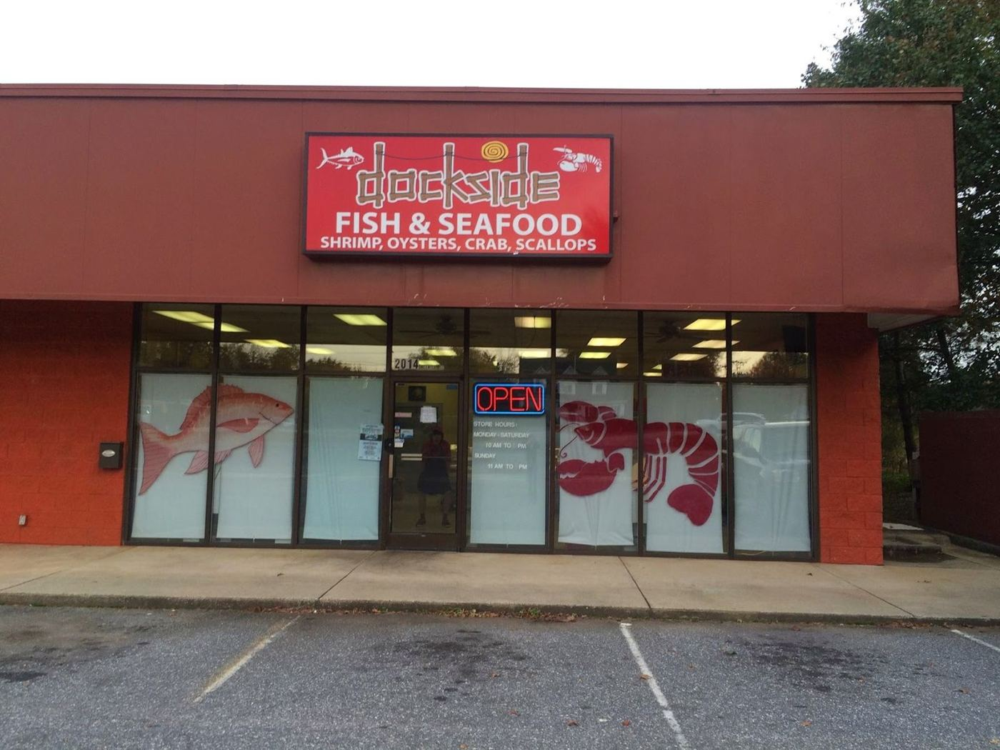

Reviews
4.6★ · 258 Google reviews
Just found this place a couple weeks ago. Absolutely a must. The fish is clean and delicious!
My husband and I enjoyed browsing this seafood market. We got a few different things.
Great store. Very clean and bright. Beautiful fish selection and prices are competitive with other fresh fish markets. Easy to deal with and my order was ready when I got there. If you live in Hickory or surrounding area you owe it to yourself to check this place out.
I have shopped here since it opened on 127 in Hickory. When they moved to the new location, I continued visiting. They have the best fresh fish around. The staff is all friendly and outgoing, helpful with knowledge. I will continue shopping here!
Went there for two pints of shucked oysters to make some oyster stew for Thanksgiving and they had some nice pints of selects. Smells like a fish market as you can imagine, but otherwise clean and neat as a pin. Looked around a little and they have a good selection of seafood and very friendly and helpful staff. I'll definitely be back.
Ever since my brother law Aaron Chang show me this place I e always come here to get my fresh oysters and sea food cuts here. Amazing staffs and very friendly. I feel welcome here and the staff was very nice to answer my questions. Even gave me a free lemon for my oysters! Will be back for more in the future. I encourage you guys give this a chance.